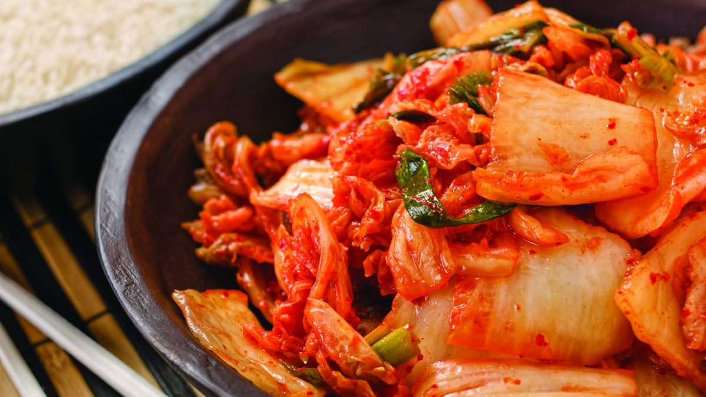

Kimchi

Description
Kimchi, also spelled kimchee, is a staple food in Korean cuisine.
It is a traditional side dish of salted and fermeneted vegetables, such as napa cabbage and Korean raddish,
made with a widely varying selection of seasonings.
In Korean culture, kimchi is served with almost every meal, including breakfast. Not only is kimchi eaten
by itself as a side dish or appetizer but it is also used as an ingredient in a variety of dishes such as Kimchi jjigae,
a traditional stew made with kimchi.
Ingredients
- 1 medium head napa cabbage (about 2 pounds)
- 1/4 cup iodine-free sea salt or kosher salt
- Water, preferably distilled or filtered
- 1 tablespoon grated garlic (5 to 6 cloves)
- 1 teaspoon grated peeled fresh ginger
- 1 teaspoon granulated sugar
- 2 tablespoons fish sauce or salted shrimp paste, or 3 tablespoons water
- 1 to 5 tablespoons Korean red pepper flakes (gochugaru)
- 8 ounces Korean radish or daikon radish, peeled and cut into matchsticks
- 4 medium scallions, trimmed and cut into 1-inch pieces
Steps
- Cut the cabbage. Cut the cabbage lengthwise through the stem into quarters. Cut the cores from each piece. Cut each quarter crosswise into 2-inch-wide strips.
- Salt the cabbage. Place the cabbage in a large bowl and sprinkle with the salt. Using your hands, massage the salt into the cabbage until it starts to soften a bit.
Add enough water to cover the cabbage. Put a plate on top of the cabbage and weigh it down with something heavy, like a jar or can of beans. Let stand for 1 to 2 hours.
- Rinse and drain the cabbage. Rinse the cabbage under cold water 3 times. Set aside to drain in a colander for 15 to 20 minutes. Meanwhile, make the spice paste.
- Make the spice paste. Rinse and dry the bowl you used for salting. Add the garlic, ginger, sugar, and fish sauce, shrimp paste, or water and stir into a smooth paste.
Stir in the gochugaru, using 1 tablespoon for mild and up to 5 tablespoons for spicy; set aside until the cabbage is ready.
- Combine the vegetables and spice paste. Gently squeeze any remaining water from the cabbage and add it to the spice paste. Add the radish and scallions.
- Mix thoroughly. Using your hands, gently work the paste into the vegetables until they are thoroughly coated. The gloves are optional here but highly recommended to
protect your hands from stings, stains, and smells!
- Pack the kimchi into the jar. Pack the kimchi into a 1-quart jar. Press down on the kimchi until the brine (the liquid that comes out) rises to cover the vegetables,
leaving at least 1 inch of space at the top. Seal the jar.
- Let it ferment for 1 to 5 days. Place a bowl or plate under the jar to help catch any overflow. Let the jar stand at cool room temperature, out of direct sunlight,
for 1 to 5 days. You may see bubbles inside the jar and brine may seep out of the lid.
- Check it daily and refrigerate when ready. Check the kimchi once a day, opening the jar and pressing down on the vegetables with a clean finger or spoon to keep them
submerged under the brine. (This also releases gases produced during fermentation.) Taste a little at this point, too! When the kimchi taste ripe enough for your liking, transfer the
jar to the refrigerator. You may eat it right away, but it's best after another week or two.